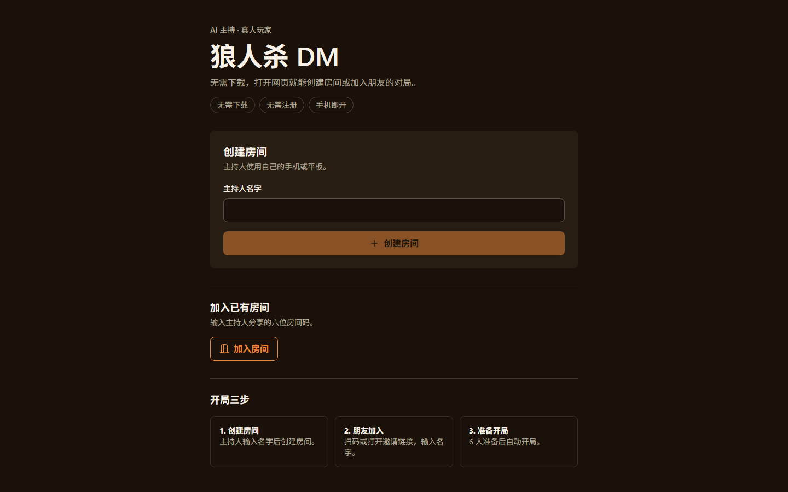
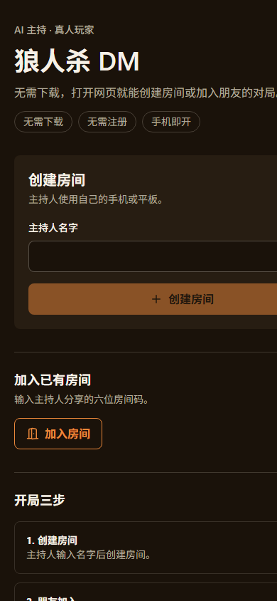

规则裁判
夜晚顺序、发言、投票、PK、技能结算和胜负都由确定性状态机完成。
GameCore · apply_command()
AI 主持 · 真人玩家 · 6 人朋友局
玩家用手机加入，共享屏承载公共舞台。AI 只负责主持、裁决、叙述和引导， 不补位玩家，也不替玩家做推理。

职责边界
状态变化只能经过领域状态机。AI 不能直接篡改游戏状态，也不能读取不该看到的隐藏信息。
夜晚顺序、发言、投票、PK、技能结算和胜负都由确定性状态机完成。
GameCore · apply_command()
公共舞台、玩家座位和主持人审计是不同投影边界，跨座位订阅直接拒绝。
PublicView · SeatView · HostControlView
房间令牌、断线重连、暂停恢复、主持纠错和 SQLite 持久化都已接通。
RoomActor · Recovery · SQLite
一局怎么开始
主持人创建房间后分享邀请链接，玩家加入并准备；六席就绪后自动开局。
单个 Docker 容器同时提供前端、API、WebSocket 和 SQLite 数据卷。
控制台生成六位房间码、邀请二维码和可直接分享的加入链接。
六名真人分别用手机加入自己的座位，共享屏只显示公共信息。
阶段推进、合理超时、播报与审计由服务端完成，玩家专注发言和投票。

当前状态
领域模型、状态机、投影与确定性回放。
FastAPI、WebSocket、令牌、频道、计时与错误边界。
手机玩家、共享舞台、主持控制台与回放。
服务端模板、严格输出边界和真实传输路径。
快照回退、主持纠错、重启恢复和审计导出。
单容器同源部署、邀请分享和持久化数据卷。
打开即玩
项目提供单容器部署。Docker Compose 会构建前端，安装 Python 后端， 并把 API、WebSocket 和静态资源放在同一个端口。
docker compose up -d --build
临时公网访问可使用 Cloudflare Tunnel；固定域名建议使用 HTTPS 反向代理。
PS> docker compose up -d --build
✔ frontend build
✔ Python 3.12 backend
✔ SQLite persistent volume
http://127.0.0.1:8000
healthz status: ok架构边界
领域层不依赖 FastAPI、WebSocket、数据库、墙钟时间或全局随机数。 适配层负责传输，运行时负责串行写入和恢复。
backend/
domain/ rules · state machine · projections
application/ core · room actor · recovery
interfaces/ FastAPI · WebSocket · audit
frontend/
player/ seat view · actions · replay
host/ pairing · pause · recovery
stage/ public-only shared screen
docs/
specs/ frozen contracts
DEPLOYMENT.md single-container deliveryapply_command()。AI-assisted Werewolf Game Master
项目采用 Apache License 2.0。源码、部署文档、规格与路线图均在 GitHub 仓库中。